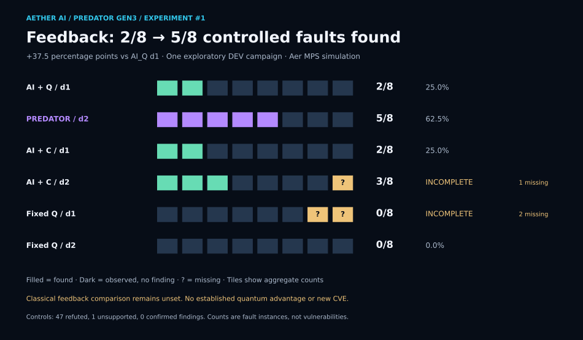
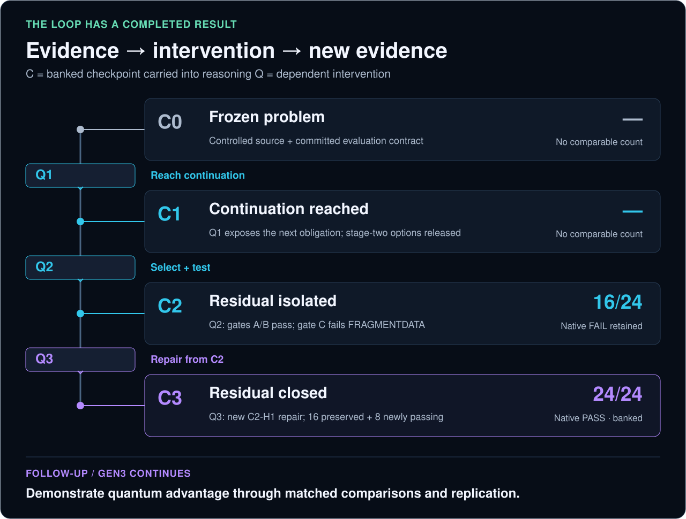
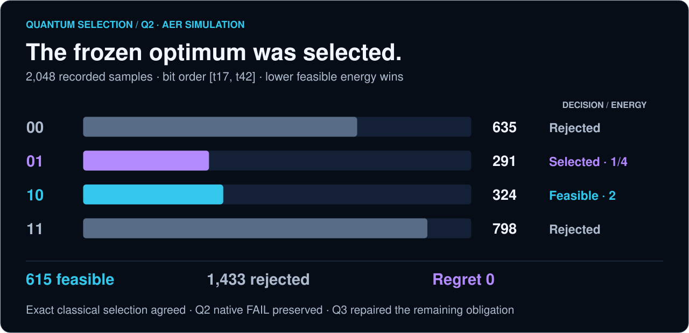
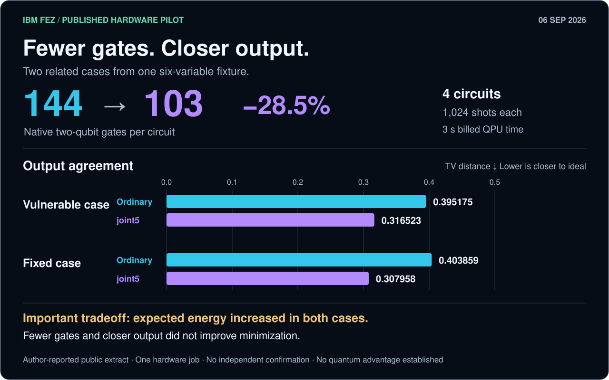

What Q3 actually repaired
A fragment-copy routine advanced the destination one byte too little after each copy. The next fragment overlapped the previous one. C2-H1 advanced by the full fragment length.
Predator combines adaptive compilation, advanced frontier-AI reasoning, and quantum-depth research to advance software analysis, vulnerability analysis, threat modeling, and resolution modeling.
Its first Gen3 repair win reached 24/24 passing CharLS cases: sixteen prior passes preserved and eight gained. C3 is the saved result and its linked evidence.
Gen3 continues. The objective is to prove quantum advantage under credible, matched comparisons.
Q3 NATIVE PASS / C3 BANKED
24/24
C2: 16/24 → C3: 24/24 protected cases
Controlled faults on real CharLS C++ source. These are test cases, not 24 vulnerabilities. “Native” means checks on the software itself; “protected” means private evaluation cases. Aggregate tiles do not identify private cases. Verification is reported by the execution lane’s completed closeout.

NEW / EXPLORATORY GEN3 EXPERIMENT #1
Predator’s AI → quantum-method search → native feedback → AI loop found 5/8 controlled faults, versus 2/8 without feedback: +37.5 percentage points. Aer MPS simulation, previously exposed DEV mechanisms, one small campaign.

Pristine controls: 47 refuted, one unsupported, zero confirmed findings. Controlled-fault traces also retain four inconsistent native/reference checks. These are controlled fault instances, not newly discovered vulnerabilities. Figures and arithmetic are reproducible from the public export; a new campaign requires the private materials.
01 / COMPLETED DEPENDENT CHAIN
C labels a saved evidence checkpoint; Q labels an intervention using that evidence. Q2 left eight cases failing—the residual. Those results became C2, the starting evidence for Q3’s successful repair.

A fragment-copy routine advanced the destination one byte too little after each copy. The next fragment overlapped the previous one. C2-H1 advanced by the full fragment length.
A new C2-directed patch and parent binding. Q3 used one candidate and retained the compiler and decoder semantics. The gain establishes dependent repair, not a stronger optimizer.
02 / THE FOLLOW-UP · GEN3 IS ACTIVE
The completed case is the foothold. The program’s objective remains an attributable quantum advantage over strong AI-only and classical alternatives. That result is not established yet.
Q3 had one candidate. Public development already reported 516/516 tests and 68 source/include files matching pinned upstream before protected evaluation. This bounds novelty and blindness claims. The closeout started no Q4; this page dispatches nothing.
03 / RECORDED QUANTUM DATA
A QUBO models yes/no repair choices and costs. Aer simulates quantum circuits on classical computers. Q2 recorded 2,048 samples and selected the unique feasible optimum at energy 1/4, regret zero. Exact classical selection agreed.

04 / SEPARATE HARDWARE EXPERIMENT
September 6, 2026: native two-qubit gates fell 144→103 per circuit. Output agreement improved in two related cases; expected-energy minimization worsened. This is separate from CharLS Q3.

05 / AETHER START
The broader Predator program studies software behavior, vulnerabilities, threats and the changes that could resolve them. CharLS Q3 is one completed repair case. Supported customer checks and private research have distinct scopes.
Connect a repository, select a supported action and review the permitted scope before approving usage.
Follow the completed dependent chain, the native repair gain and the quantum-advantage objective ahead.
Predator Security requires an approved assurance profile; customer-specific profiles are private preview. Hosted Build & Test is a separate Actions service. The research CLI and backend are private.
The producer reports signed native and lineage verification and full-hash readback of 17 C3 objects. Supporting validation: 516/516 stock tests including 17/17 compliance, sanitizer PASS and 10,000 fuzz executions. This editorial summary did not independently reverify private receipt bytes.
Native PASS and C3 banked coexist with an immutable hosted failed/lost completion record caused by an HTTP 422 field-shape mismatch. Public figures and arithmetic are rebuildable; the full private campaign is not independently reproducible from this repository alone. Full scope and fingerprints →